अर्थशास्त्र (कक्षा 10) - अध्याय 2
भारतीय अर्थव्यवस्था के क्षेत्रक (Sectors of the Indian Economy) - संपूर्ण मास्टर नोट्स
लोग अपने जीवन-यापन के लिए विभिन्न प्रकार की आर्थिक गतिविधियों में लगे रहते हैं। इन गतिविधियों को तीन प्रमुख श्रेणियों (क्षेत्रकों) में वर्गीकृत किया जाता है:
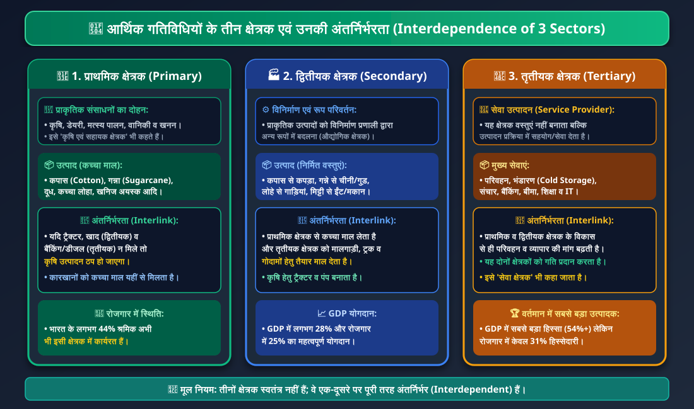
चार्ट 2.1: तीनों क्षेत्रक एवं उनकी अंतर्निर्भरता मैट्रिक्स (Interdependence of 3 Sectors)。
🔄 क्षेत्रकों की अंतर्निर्भरता विश्लेषण:
• 1. प्राथमिक क्षेत्रक: प्राकृतिक संसाधनों (भूमि, जल, वनस्पति) का प्रत्यक्ष उपयोग कर वस्तुएं बनाना (कृषि, डेयरी, खनन)।
• 2. द्वितीयक क्षेत्रक: प्राकृतिक उत्पादों को विनिर्माण प्रणाली द्वारा उपयोगी वस्तुओं में बदलना (कपास से कपड़ा, गन्ने से चीनी)।
• 3. तृतीयक क्षेत्रक: वस्तुओं का उत्पादन नहीं करता बल्कि उत्पादन और व्यापार प्रक्रिया को सहयोग (परिवहन, बैंक, संचार, भंडारण) देता है।
1. प्राथमिक क्षेत्रक (Primary Sector): जब हम प्राकृतिक संसाधनों का उपयोग करके किसी वस्तु का उत्पादन करते हैं, तो इसे प्राथमिक क्षेत्रक की गतिविधि कहा जाता है। इसे 'कृषि एवं सहायक क्षेत्रक' भी कहते हैं। (उदा.—कपास की खेती, डेयरी, मत्स्य पालन, वानिकी, खनिज अयस्क निकालना)।
2. द्वितीयक क्षेत्रक (Secondary Sector): इसके अंतर्गत प्राकृतिक उत्पादों को विनिर्माण प्रणाली (कारखानों/कार्यशालाओं) के जरिए अन्य उपयोगी रूपों में बदला जाता है। इसे 'औद्योगिक क्षेत्रक' भी कहते हैं। (उदा.—गन्ने से चीनी व गुड़ बनाना, कपास से कपड़ा बुनना, लोहे से गाड़ियां बनाना, मिट्टी से ईंटें बनाना)।
3. तृतीयक क्षेत्रक (Tertiary Sector): ये गतिविधियां प्राथमिक और द्वितीयक क्षेत्रक के विकास में मदद करती हैं। ये वस्तुएं नहीं बनातीं, बल्कि सेवाओं का सृजन करती हैं। अतः इसे 'सेवा क्षेत्रक (Service Sector)' भी कहा जाता है। (उदा.—परिवहन, भंडारण, बैंकिंग, संचार, बीमा, व्यापार, डॉक्टर, शिक्षक, IT सॉफ्टवेयर सेवाएं)।
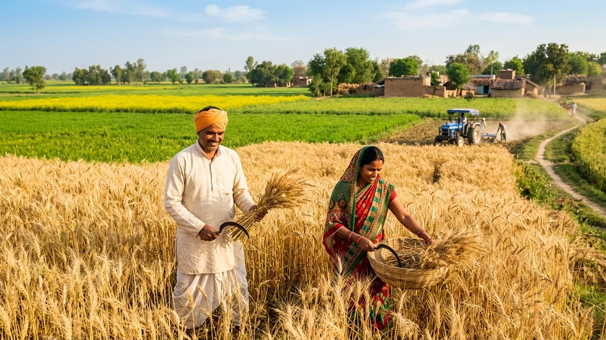
चित्र 2.1: प्राथमिक क्षेत्रक - कृषि एवं फसल उत्पादन (Primary Sector: Agriculture)।
🌾 प्राकृतिक संसाधनों का प्रत्यक्ष उपयोग:
• कृषि प्राथमिक क्षेत्रक की रीढ़ है, जो देश को खाद्यान्न और उद्योगों को कच्चा माल (कपास, गन्ना, जूट, तिलहन) प्रदान करती है।
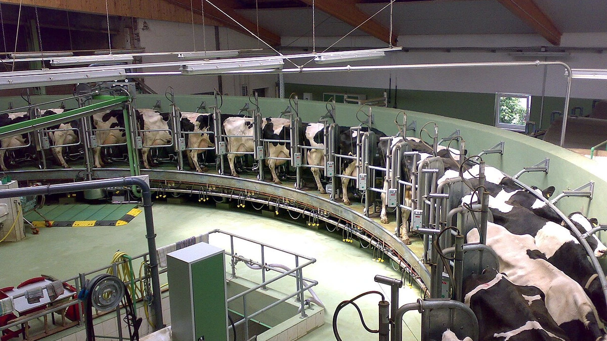
चित्र 2.2: प्राथमिक क्षेत्रक - आधुनिक डेयरी एवं पशुपालन (Primary Sector: Dairy & Livestock)।
🥛 जैविक प्रक्रियाओं पर निर्भरता:
• दूध उत्पादन पशुओं की जैविक प्रक्रिया और चारे की उपलब्धता पर निर्भर करता है, अतः यह प्राथमिक क्षेत्रक का अभिन्न अंग है।
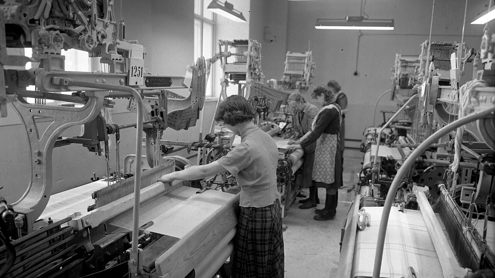
चित्र 2.3: द्वितीयक क्षेत्रक - औद्योगिक विनिर्माण (Secondary Sector: Industrial Textile Mill)।
⚙️ विनिर्माण द्वारा मूल्य संवर्धन:
• प्राथमिक क्षेत्रक से प्राप्त रेशों और कपास को स्वचालित करघों द्वारा धागे और कपड़ों में बदलकर बाजार में बेचा जाता है।
चित्र 2.4: तृतीयक क्षेत्रक - सूचना प्रौद्योगिकी एवं सॉफ्टवेयर हब (Tertiary Sector: IT & Software Hub)।
💻 21वीं सदी की सेवा क्रांति:
• भारत का IT और सॉफ्टवेयर सेवा उद्योग वैश्विक स्तर पर सेवाएं निर्यात कर देश के सेवा क्षेत्रक को शीर्ष पर ले आया है।
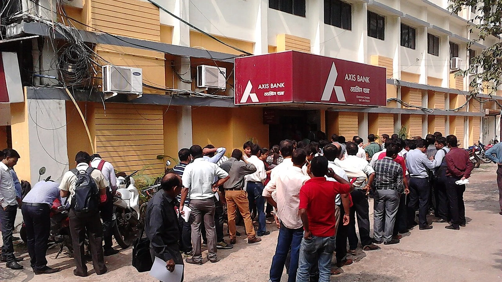
चित्र 2.5: तृतीयक क्षेत्रक - बैंक शाखा का आंतरिक वातावरण एवं कार्यप्रणाली (Bank Branch Interior & Financial Services)।
🏦 आधुनिक बैंक शाखा के अंदर का सजीव वातावरण:
• कैश एवं ऋण सेवा डेस्क: बैंक अधिकारी ग्राहकों को बचत खाता संचालन, नकदी जमा/निकासी और फसल व व्यावसायिक ऋण समझाते हुए।
• डिजिटल ATM कियोस्क: 24x7 स्वचालित टेलर मशीन (ATM) द्वारा त्वरित नकदी निकासी सुविधा।
• टोकन कतार एवं ग्राहक सेवा: व्यवस्थित प्रतीक्षालय, डिजिटल टोकन स्क्रीन और पारदर्शी बैंकिंग सेवाएं जो प्राथमिक एवं द्वितीयक क्षेत्रकों के विकास को गति प्रदान करती हैं।
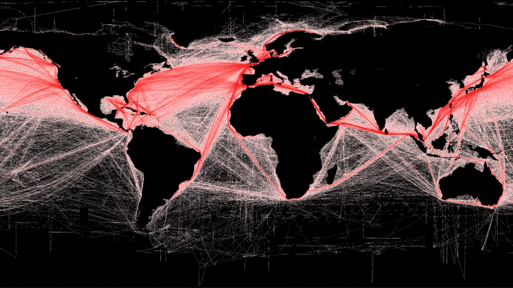
चित्र 2.6: सेवा क्षेत्रक - मल्टीमॉडल माल परिवहन एवं लॉजिस्टिक्स (Freight Transport & Supply Chain Logistics)।
🚚 खेत और कारखाने से वैश्विक बाजार तक (मल्टीमॉडल लॉजिस्टिक्स):
• सड़क, रेल, जल एवं वायु परिवहन: विशाल कंटेनर ट्रक, मालवाहक जहाज, कार्गो विमान और फोर्कलिफ्ट तैयार माल को तेजी से गंतव्य तक पहुंचाते हैं।
• सप्लाई चेन एवं डिजिटल इन्वेंट्री: लॉजिस्टिक्स इंजीनियर लैपटॉप और बारकोड सिस्टम से माल की ट्रैकिंग और भंडारण का प्रबंधन करते हैं।
• तृतीयक क्षेत्रक का योगदान: यह सेवा प्राथमिक (कच्चा माल) और द्वितीयक क्षेत्रक (तैयार उत्पाद) के बीच सेतु का कार्य करती है।
अर्थव्यवस्था में हजारों प्रकार की वस्तुएं और सेवाएं उत्पादित होती हैं। हम इन सभी का कुल योग कैसे निकालते हैं? क्या कारों, अनाजों और मोबाइल फोनों की कुल संख्या को सीधे जोड़ा जा सकता है? नहीं!
💡 अर्थशास्त्रियों का समाधान:
वस्तुओं और सेवाओं की वास्तविक संख्याओं को जोड़ने के बजाय उनके मूल्य (द्रव्य मूल्य - Monetary Value) का योग किया जाता है।
• सावधानी (Crucial Rule): केवल अंतिम वस्तुओं और सेवाओं (Final Goods & Services) के मूल्य की ही गणना की जाती है!
1. किसान द्वारा गेहूं बेचना: एक किसान ₹8 प्रति किग्रा की दर से गेहूं एक आटा मिल को बेचता है।
2. आटा मिल द्वारा प्रसंस्करण: मिल गेहूं को पीसती है और बिस्कुट कंपनी को आटा ₹10 प्रति किग्रा में बेचती है।
3. बिस्कुट कंपनी द्वारा अंतिम उत्पाद: बिस्कुट कंपनी आटे के साथ चीनी और तेल मिलाकर बिस्कुट के 4 पैकेट बनाती है और बाजार में ₹60 (₹15 प्रति पैकेट) में बेचती है।
🎯 निष्कर्ष (अंतिम वस्तु): बिस्कुट ही अंतिम उत्पाद (Final Good) है जो उपभोक्ता तक पहुंचता है। बिस्कुट के ₹60 के मूल्य में गेहूं, आटा, चीनी और तेल (मध्यवर्ती वस्तुएं) का मूल्य पहले से ही शामिल है। यदि हम गेहूं और आटे का मूल्य अलग से जोड़ेंगे तो 'दोहरी गणना' (Double Counting) की गंभीर गलती हो जाएगी!
चित्र 2.7: अंतिम वस्तु निर्माण - खाद्य प्रसंस्करण (Final Goods: Automated Biscuit Manufacturing)。
🍪 केवल अंतिम मूल्य की गणना:
• बिस्कुट के पैकेट का अंतिम बाजार मूल्य ही GDP में जोड़ा जाता है क्योंकि इसमें गेहूं, चीनी और ऊर्जा की मध्यवर्ती लागत पहले से शामिल होती है।
🏛️ सकल घरेलू उत्पाद (GDP - Gross Domestic Product) की प्रामाणिक परिभाषा:
"किसी विशेष वर्ष में प्रत्येक क्षेत्रक द्वारा उत्पादित सभी अंतिम वस्तुओं और सेवाओं का मूल्य उस वर्ष में क्षेत्रक के कुल उत्पादन की जानकारी देता है। तीनों क्षेत्रकों के उत्पादनों के कुल योगफल को देश का सकल घरेलू उत्पाद (GDP) कहते हैं।"
• मापन एजेंसी: भारत में GDP की गणना का विशाल कार्य केंद्र सरकार का सांख्यिकी और कार्यक्रम कार्यान्वयन मंत्रालय (CSO/NSO) करता है।
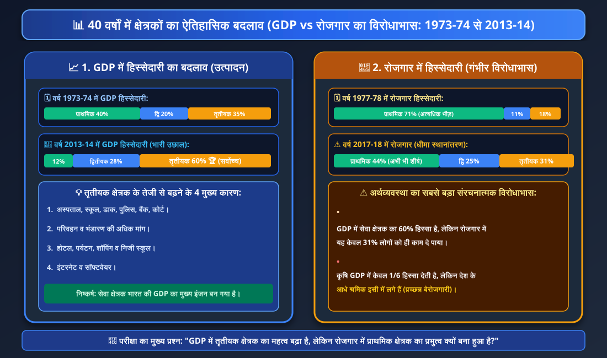
चार्ट 2.2: 40 वर्षों में GDP vs रोजगार का ऐतिहासिक बदलाव (1973-74 से 2013-14)।
📊 40 वर्षों का ऐतिहासिक विश्लेषण:
• GDP में तृतीयक क्षेत्रक का प्रभुत्व: 1973-74 में प्राथमिक क्षेत्रक सबसे बड़ा था, लेकिन 2013-14 तक तृतीयक क्षेत्रक बढ़कर GDP का 60% हो गया।
• रोजगार का संरचनात्मक विरोधाभास: GDP में कृषि की हिस्सेदारी गिरकर 12-14% रह गई, लेकिन 2017-18 में भी 44% भारतीय श्रमिक कृषि में ही फंसे रहे।
🌟 भारत में तृतीयक क्षेत्रक (सेवा क्षेत्रक) के तेजी से बढ़ने के 4 प्रमुख कारण:
1. बुनियादी सेवाओं की अनिवार्यता: किसी भी देश में अस्पताल, स्कूल, डाक, पुलिस स्टेशन, कचहरी, ग्राम प्रशासनिक कार्यालय, रक्षा, परिवहन व बैंक जैसी बुनियादी सेवाएं सरकार को उपलब्ध करानी ही होती हैं।
2. कृषि एवं उद्योग का विकास: जब कृषि और कारखानों का उत्पादन बढ़ता है, तो माल को ढोने के लिए परिवहन, रखने के लिए गोदाम और बेचने के लिए व्यापार की मांग स्वतः बढ़ जाती है।
3. आय स्तर में वृद्धि: लोगों की आय बढ़ने पर वे बाहर खाना खाने (होटल), पर्यटन, निजी अस्पताल, निजी स्कूल और शॉपिंग जैसी सेवाओं की अधिक मांग करने लगते हैं।
4. सूचना एवं संचार क्रांति (IT & Telecom): विगत दो दशकों में इंटरनेट, सॉफ्टवेयर, मोबाइल टेलीकॉम और डिजिटल सेवाओं में अभूतपूर्व वृद्धि हुई है।
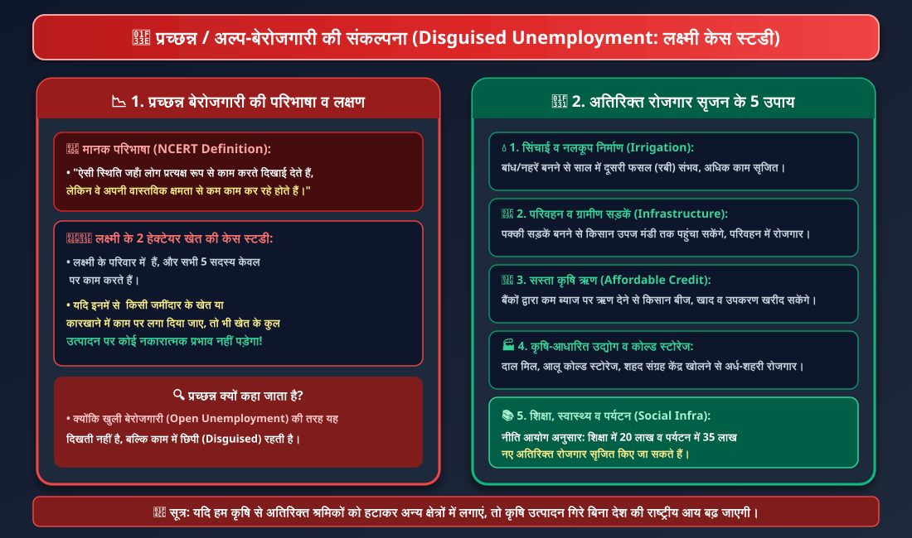
चार्ट 2.3: प्रच्छन्न बेरोजगारी (लक्ष्मी केस स्टडी) एवं 5 रोजगार सृजन मॉडल。
📉 अल्प-बेरोजगारी की प्रकृति:
• प्रच्छन्न बेरोजगारी (छिपी हुई बेरोजगारी): जब किसी काम में आवश्यकता से अधिक लोग लगे होते हैं और यदि कुछ लोगों को हटा भी दिया जाए, तो भी कुल उत्पादन पर कोई फर्क नहीं पड़ता।
• लक्ष्मी का उदाहरण: 2 हेक्टेयर असिंचित खेत पर परिवार के 5 लोग काम कर रहे हैं। यदि 2 लोगों को हटा दिया जाए तो भी खेत की उपज उतनी ही रहेगी।
चित्र 2.8: प्रच्छन्न / अल्प-बेरोजगारी (Disguised Unemployment in Fragmented Small Farms)।
🌾 प्रत्यक्ष काम लेकिन क्षमता का कम उपयोग:
• काम सभी करते दिखते हैं लेकिन कोई भी अपनी पूरी क्षमता से काम नहीं कर रहा होता। इसे 'अल्प-रोजगार' या 'छिपी हुई बेरोजगारी' कहते हैं।
1. सिंचाई अवसंरचना व नलकूप निर्माण: यदि सरकार लक्ष्मी जैसे किसानों को कुआं/नलकूप खोदने या नहर बनाने में सहायता दे, तो वे रबी में दूसरी फसल (जैसे गेहूं/चना) ले सकेंगे, जिससे 2 और लोगों को वर्ष भर रोजगार मिलेगा।
2. ग्रामीण सड़कें एवं परिवहन व्यवस्था: पक्की सड़कें और मिनी-ट्रक उपलब्ध होने से किसान अपनी उपज निकटवर्ती शहर की मंडी तक ले जाकर अच्छे दामों पर बेच सकेंगे।
3. सस्ता संस्थागत कृषि ऋण (Bank Credit): साहूकारों के ऊंचे ब्याज जाल से बचाकर स्थानीय बैंक किसानों को कम ब्याज पर ऋण दें ताकि वे समय पर उत्तम बीज, खाद व कीटनाशक खरीद सकें।
4. कृषि-आधारित लघु उद्योग व कोल्ड स्टोरेज: ग्रामीण और अर्ध-शहरी क्षेत्रों में दाल मिल, आटा चक्की, आलू के कोल्ड स्टोरेज और शहद संग्रह केंद्र स्थापित करने से लाखों स्थानीय युवाओं को रोजगार मिलेगा।
5. शिक्षा, स्वास्थ्य एवं पर्यटन का विस्तार: नीति आयोग के अध्ययन अनुसार—स्कूल खोलने से 20 लाख नए शिक्षक/कर्मचारी तथा पर्यटन को बढ़ावा देने से हर वर्ष 35 लाख से अधिक लोगों को नया रोजगार दिया जा सकता है।
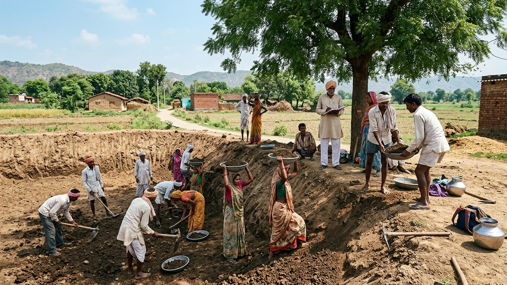
चित्र 2.9: मनरेगा 2005 - ग्रामीण रोजगार गारंटी (MGNREGA 2005: Right to Work in Rural India)।
📜 काम का कानूनी अधिकार:
• अकुशल ग्रामीण श्रमिकों को वर्ष में 100 दिन के काम की गारंटी देकर सूखे और मंदी के समय भुखमरी व पलायन से सुरक्षा।
चित्र 2.10: सिंचाई सुविधा एवं फसल विविधीकरण (Canal Irrigation & Agricultural Productivity)。
💧 बहु-फसली कृषि प्रणाली:
• सिंचाई उपलब्ध होने से असिंचित भूमि पर साल में 2 से 3 फसलें उगाई जा सकती हैं, जिससे खेतों में अतिरिक्त श्रम दिवस सृजित होते हैं।
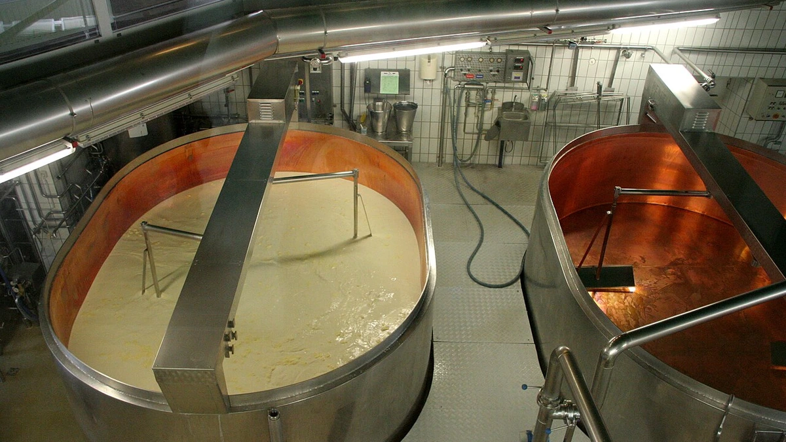
चित्र 2.11: कृषि आधारित उद्योग एवं कोल्ड स्टोरेज (Agri-Processing & Cold Storage Facilities)。
🥔 फसल बर्बादी की रोकथाम:
• फल और सब्जियों को खराब होने से बचाने और ऑफ-सीजन में अच्छे दाम दिलाने के लिए कोल्ड स्टोरेज अर्ध-शहरी रोजगार का उत्तम साधन हैं।
चित्र 2.12: पर्यटन एवं आतिथ्य रोजगार (Tourism, Heritage & Hospitality Services)。
🏛️ 35 लाख नए रोजगार की क्षमता:
• ऐतिहासिक धरोहरों, इको-टूरिज्म और स्थानीय हस्तशिल्प से गाइड, होटल, कैब व खान-पान में व्यापक आजीविका उत्पन्न होती है।
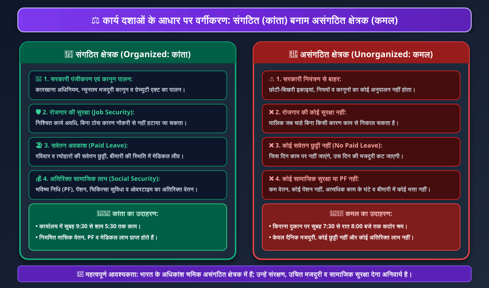
चार्ट 2.4: संगठित बनाम असंगठित क्षेत्रक तुलनात्मक मॉडल (Organized vs Unorganized Sector)。
⚖️ कार्यदशाओं एवं सुरक्षा का तुलनात्मक अध्ययन:
• संगठित क्षेत्रक (कांता): सरकारी कानूनों का पालन, रोजगार की निश्चित सुरक्षा, सवेतन अवकाश (Paid Leave), भविष्य निधि (PF), पेंशन व मेडिकल लाभ।
• असंगठित क्षेत्रक (कमल): सरकारी नियंत्रण से बाहर, कम व अनियमित मजदूरी, कोई सवेतन छुट्टी नहीं, मालिक की मर्जी से कभी भी हटाया जा सकता है।
🛡️ असंगठित क्षेत्रक के श्रमिकों को संरक्षण क्यों आवश्यक है?
भारत के 80% से अधिक श्रमिक असंगठित क्षेत्रक में काम करते हैं। उन्हें आर्थिक, सामाजिक और कानूनी सुरक्षा देना अनिवार्य है:
1. ग्रामीण क्षेत्र में: भूमिहीन खेतिहर मजदूर, छोटे व सीमांत किसान, बुनकर, लोहार, बढ़ई व कुम्हार—इन्हें समय पर बीज, कृषि उपकरण, सस्ता ऋण व भंडारण सुविधा दी जानी चाहिए।
2. शहरी क्षेत्र में: लघु उद्योगों के श्रमिक, निर्माण मजदूर, सिर पर बोझा ढोने वाले कुली, कबाड़ी व फुटपाथ पर सामान बेचने वाले फेरीवाले—इन्हें न्यूनतम मजदूरी और कार्यस्थल सुरक्षा मिलनी चाहिए।
3. सामाजिक न्याय: इनमें अधिकांश अनुसूचित जाति, जनजाति और पिछड़ी जातियों के लोग हैं, जो आर्थिक शोषण के साथ सामाजिक भेदभाव भी झेलते हैं।
चित्र 2.13: संगठित क्षेत्रक - निश्चित कार्य अवधि एवं सामाजिक सुरक्षा (Organized Sector Workplace)。
🏢 कांता का सुरक्षित परिवेश:
• नियमित मासिक वेतन, प्रोविडेंट फंड (PF), स्वास्थ्य बीमा, तय कार्य घंटे और कानूनी अधिकारों का संरक्षण।
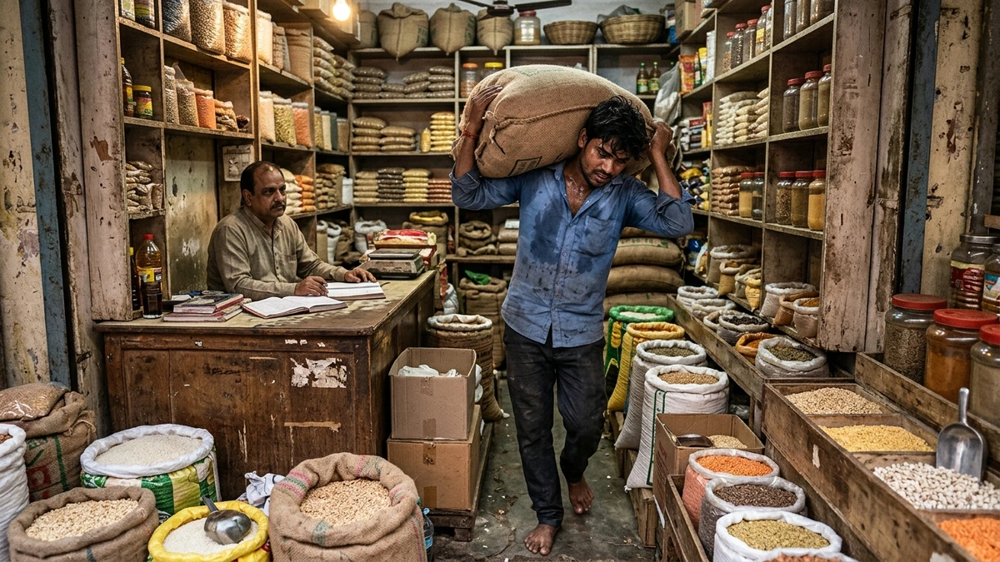
चित्र 2.14: असंगठित क्षेत्रक - दैनिक मजदूरी एवं अनिश्चितता (Unorganized Sector: Daily Wage Labor)。
🔨 कमल का संघर्ष:
• लंबे कार्य घंटे, कोई छुट्टी नहीं, बिना कारण काम से निकाले जाने का भय और वृद्धावस्था सुरक्षा का अभाव।
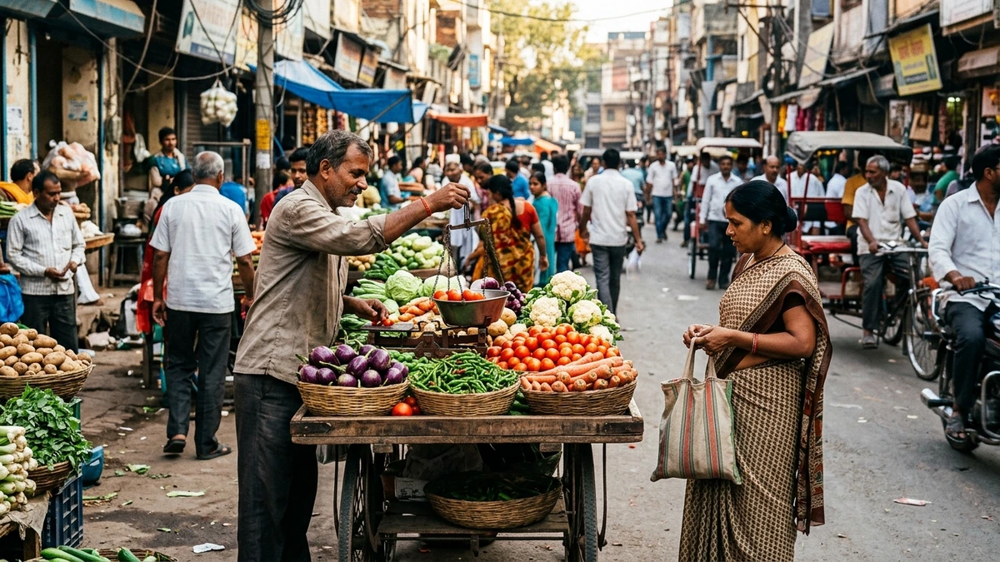
चित्र 2.15: असंगठित क्षेत्रक - शहरी रेहड़ी-पटरी विक्रेता (Urban Street Vendors & Informal Economy)。
🛒 स्वरोजगार में जोखिम:
• अपनी छोटी पूंजी लगाकर सड़क किनारे सामान बेचने वाले लाखों नागरिक जो किसी भी सामाजिक सुरक्षा योजना से वंचित हैं।
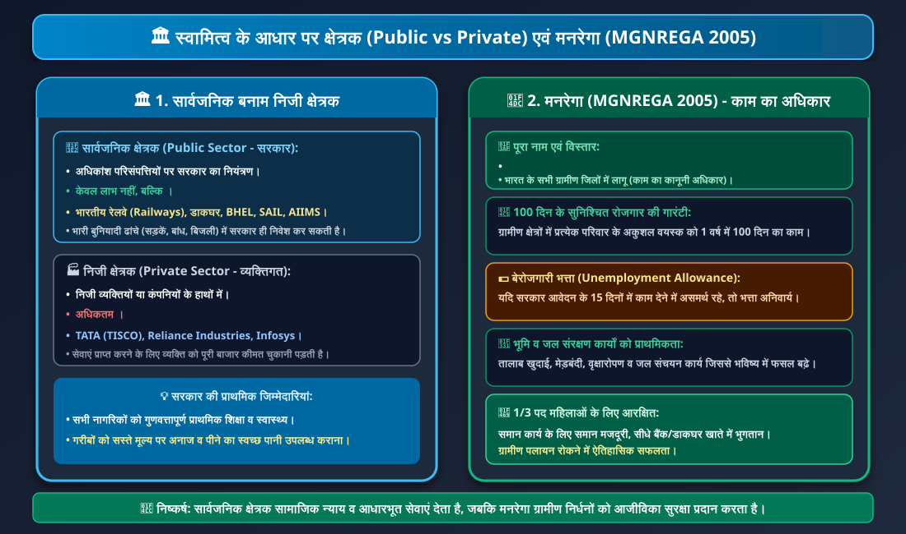
चार्ट 2.5: स्वामित्व आधारित क्षेत्रक एवं मनरेगा 2005 (Public vs Private & MGNREGA)。
🏛️ मुख्य अंतर एवं सामाजिक दायित्व:
• सार्वजनिक क्षेत्रक (Public): संपत्तियों का स्वामी सरकार; उद्देश्य जन-कल्याण (Social Welfare) (रेलवे, डाकघर, AIIMS, BHEL)।
• निजी क्षेत्रक (Private): संपत्तियों का स्वामी निजी व्यक्ति/कंपनी; उद्देश्य अधिकतम लाभ (Profit Motive) (टाटा स्टील, रिलायंस)।
• मनरेगा (MGNREGA 2005): ग्रामीण परिवारों को 100 दिन का सुनिश्चित रोजगार, 15 दिन में काम न मिलने पर बेरोजगारी भत्ता अनिवार्य।
💡 भारी आधारभूत ढांचे में सरकार का निवेश क्यों अनिवार्य है?
सड़कें, पुल, रेलवे लाइन, बड़े बांध, बंदरगाह व बिजली संयंत्र बनाने में अरबों रुपयों का भारी खर्च आता है, जो निजी क्षेत्रक के सामर्थ्य से बाहर होता है। साथ ही, निजी कंपनियां इन सुविधाओं के लिए अत्यधिक शुल्क वसूलेंगी जिससे आम गरीब नागरिक वंचित रह जाएंगे। अतः सरकार सभी के हित में इनका निर्माण करती है।
चित्र 2.16: सार्वजनिक क्षेत्रक - भारतीय रेलवे (Public Sector: Indian Railways National Infrastructure)。
🚆 देश की जीवन रेखा:
• सरकार द्वारा संचालित रेलवे देश के कोने-कोने में सस्ती यात्रा और माल ढुलाई की सुविधा देकर राष्ट्रीय एकता व आर्थिक विकास सुनिश्चित करती है।
चित्र 2.17: सार्वजनिक स्वास्थ्य सेवा - सरकारी अस्पताल (Public Healthcare: Government Hospital)。
🏥 सभी के लिए सस्ती चिकित्सा:
• प्राथमिक स्वास्थ्य से लेकर उच्च स्तरीय सर्जरी तक सरकारी अस्पताल गरीबों को निःशुल्क/रियायती स्वास्थ्य सुरक्षा देते हैं।
चित्र 2.18: निजी क्षेत्रक - औद्योगिक नवाचार एवं पूंजी निवेश (Private Sector: Modern Steel Industry)。
🏭 नवाचार एवं प्रतिस्पर्धा:
• निजी क्षेत्रक की कंपनियां अत्याधुनिक तकनीक, गुणवत्तापूर्ण उत्पाद और वैश्विक बाजार में प्रतिस्पर्धा को बढ़ावा देती हैं।
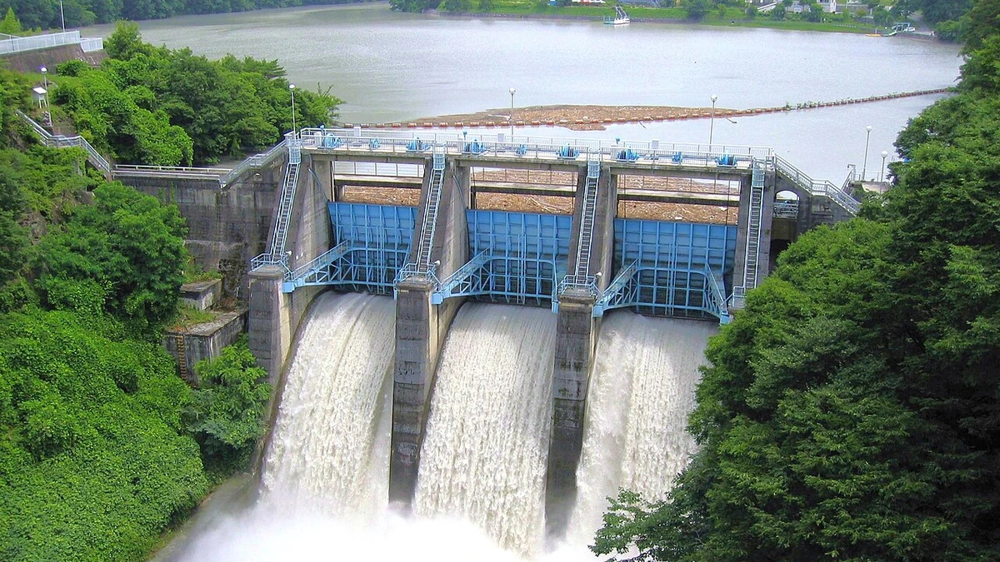
चित्र 2.19: सार्वजनिक अवसंरचना - बांध एवं जल बैराज (Public Sector: Dam & Irrigation Infrastructure)。
🌊 दीर्घकालिक जल सुरक्षा:
• विशाल बांधों का निर्माण केवल सरकार ही कर सकती है, जो बाढ़ नियंत्रण, पनबिजली और लाखों हेक्टेयर में सिंचाई पहुंचाते हैं।
चित्र 2.20: कौशल विकास एवं रोजगार संवर्धन (Vocational Skill Training & Youth Employment)。
🔧 रोजगारपरक शिक्षा:
• युवाओं को तकनीकी व व्यावसायिक हुनर सिखाकर असंगठित क्षेत्रक से संगठित विनिर्माण एवं सेवा क्षेत्रक में रोजगार के अवसर प्रदान करना।
📌 परीक्षा उपयोगी त्वरित सारांश बिंदु (Quick Exam Takeaways):
1. प्राथमिक क्षेत्रक: प्राकृतिक संसाधनों का प्रत्यक्ष दोहन (कृषि, डेयरी, खनन)।
2. द्वितीयक क्षेत्रक: विनिर्माण द्वारा रूप बदलना (कारखाने, वस्त्र, ईंट निर्माण)।
3. तृतीयक क्षेत्रक: सेवाएं प्रदान करना (परिवहन, बैंक, संचार, IT) — GDP का 60% उत्पादक।
4. GDP गणना नियम: केवल अंतिम वस्तुओं और सेवाओं का बाजार मूल्य जोड़ा जाता है (दोहरी गणना से बचाव)।
5. रोजगार का विरोधाभास: प्राथमिक क्षेत्रक GDP में केवल 1/6 देता है, लेकिन देश के 44% श्रमिक इसी में लगे हैं।
6. प्रच्छन्न बेरोजगारी: श्रमिक काम करते दिखते हैं लेकिन उनकी सीमांत उत्पादकता शून्य होती है (उदा. लक्ष्मी का 2 हेक्टेयर खेत)।
7. संगठित क्षेत्रक: सरकारी कानून लागू, रोजगार सुरक्षा, सवेतन छुट्टी, PF व पेंशन (कांता)।
8. असंगठित क्षेत्रक: नियमों से बाहर, कम वेतन, कोई छुट्टी नहीं, असुरक्षित रोजगार (कमल)।
9. स्वामित्व भेद: सार्वजनिक = सरकार (जन-कल्याण / रेलवे) | निजी = व्यक्ति/कंपनी (लाभ / टाटा)।
10. मनरेगा 2005: ग्रामीण अकुशल वयस्कों को 100 दिन का सुनिश्चित काम, 15 दिन में न मिलने पर बेरोजगारी भत्ता, 1/3 पद महिलाओं के लिए।